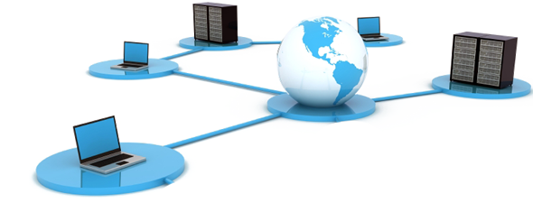

İki ya da daha çok bilgisayarın bir birine bağlanmasına bilgisayar ağı (network) denir.
Bilgisayarlar ağ ile birbirlerine bağlandıklarında sahip olduklarıkaynakları paylaşmak üzere birbirleri ile iletişim kurar.
1969 yılında ilk geliştirilen bilgisayar ağıyla yalnız dörtbilgisayar arasında bağlantı kurulabilirken, bugün bir bilgisayarağı ile değişik ve birbirinden uzak yerlerde bulunan binlercebilgisayar arasında iletişim sağlanabilmektedir.
Kaynak paylaşımına ve iletişime ihtiyaç duyulan her yerde bilgisayar ağları kullanılmaktadır
Böylece dosyaların, donanımların ve yazılımların güvenli ve verimli kullanımı sağlanabilir
Bilgisayarlar arasında ağ kurulması ayrıca yönetim ve destekgörevlerinin de kolayca yapılmasını sağlar. Ağ yöneticisi tek bir yerden ağ üzerindeki diğer bilgisayarları yönetebilir.
Örneğin bir programı yüklemek ya da kullanıcının bir sorunu gidermek için kullanıcının bilgisayarına gitmeye gerek kalmadan ağ üzerinden (uzaktan) müdahale edilebilir.
